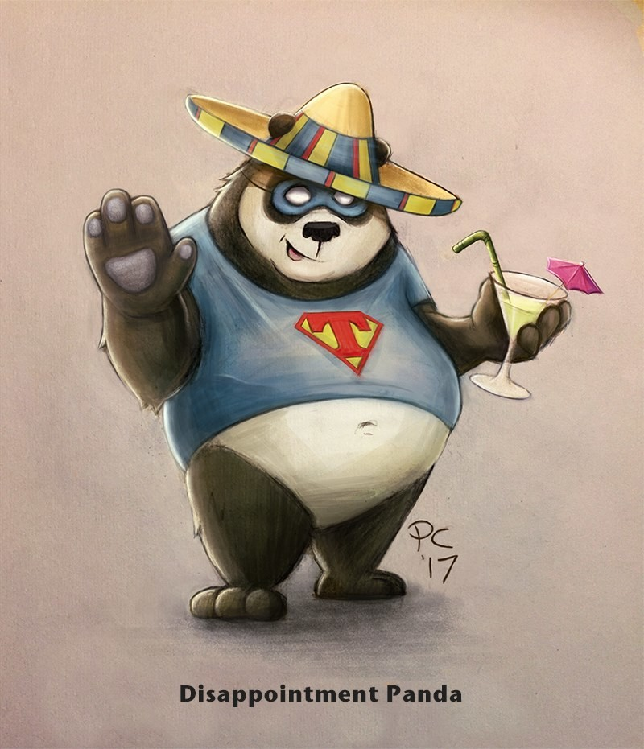

Dissapointment Panda
Author: Mark Manson

Not the hero you want but the hero you need!
The Misadventures of Disappointment Panda.
Mark has a panda. This panda isn’t just a normal panda. This panda is a superhero, with a special superpower, to tell people the harsh truth about their lives. If you meet this panda, he will tell you how ugly you are, that you are such a failure. Of course that wouldn’t be pleasant to hear. But sometimes, what we need is for someone to tell us the truth. The harsh truth is going to make your life better, although maybe it makes you feel like shit. Just think of it like bitter vegetables on your plate. They are without a doubt healthy, you just have to accept that it takes a little bit of effort to eat them.